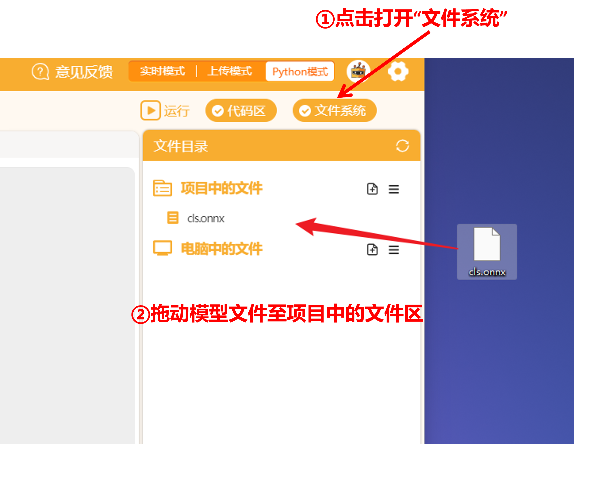

模型转换和应用
一、简介
用XEdu系列工具训练的模型，是否只能运行在安装了XEdu环境的电脑上？如何将训练好的AI模型方便地部署到不同的硬件设备上？这在实际应用中非常重要。XEdu提供了帮助模型转换和应用的工具。
二、基本概念
1.模型转换（Model Convert ）：为了让训练好的模型能在不同框架间流转，通常需要将模型从训练框架转换为推理框架。这样可以在各种硬件设备上部署模型，提高模型的通用性和实用性。
2.模型应用（Model Applying ）：在实际问题中使用训练好的模型进行预测和分析。这通常涉及到数据预处理、模型输入、模型输出解释等步骤。模型应用的目标是将深度学习技术与实际业务场景相结合，以解决实际问题，提高工作效率和准确性。
3.模型部署（Model Deploying ）：将训练好的模型应用到实际场景中，如手机、开发板等。模型部署需要解决环境配置、运行效率等问题。部署过程中，可能需要对模型进行优化，以适应特定的硬件和软件环境，确保模型在实际应用中的性能和稳定性。
4.深度学习推理框架：一种让深度学习算法在实时处理环境中提高性能的框架。常见的有ONNXRuntime、NCNN、TensorRT、OpenVINO等。ONNXRuntime是微软推出的一款推理框架，支持多种运行后端包括CPU，GPU，TensorRT，DML等，是对ONNX模型最原生的支持。NCNN是腾讯公司开发的移动端平台部署工具，一个为手机端极致优化的高性能神经网络前向计算框架。NCNN仅用于推理，不支持学习。
为什么要进行模型转换？
模型转换的目的是让训练好的模型能在不同框架间流转。在实际应用中，模型转换主要用于工业部署，负责将模型从训练框架迁移到推理框架。这是因为随着深度学习应用和技术的发展，训练框架和推理框架的职能已经逐渐分化。训练框架主要关注易用性和研究员的需求，而推理框架关注硬件平台的优化加速，以实现更快的模型执行。由于它们的职能和侧重点不同，没有一个深度学习框架能完全满足训练和推理的需求，因此模型转换变得非常重要。
概括： 训练框架大，塞不进两三百块钱买的硬件设备中，推理框架小，能在硬件设备上安装。要把训练出的模型翻译成推理框架能读懂的语言，才能在硬件设备上运行
三、如何进行模型转换？
我们可以直接使用MMEdu、BaseNN的convert函数进行一键式模型转换。
1.MMEdu模型转换
MMEdu内置了一个convert函数，来实现了一键式模型转换，转换前先了解一下转换要做的事情吧。
转换准备：
待转换的模型权重文件（用MMEdu训练）。
需要配置两个信息：
待转换的模型权重文件（
checkpoint）和输出的文件（out_file）。模型转换的典型代码：
from MMEdu import MMClassification as cls
model = cls(backbone='MobileNet')
checkpoint = 'checkpoints/cls_model/CatsDog/best_accuracy_top-1_epoch_2.pth'
out_file="catdog.onnx"
model.convert(checkpoint=checkpoint, out_file=out_file)
model.convert函数中有四个参数可以设置：
checkpoint(string) - 必需参数，选择想要进行模型转换的权重文件，以.pth为后缀。out_file(string) - 必需参数，指定模型转换后的输出文件路径。opset_version(int) - 可选参数，设置模型算子集的版本，默认为11。ir_version(int) - 可选参数，设置模型转化中间表示的版本，默认为6。
类似的，目标检测模型转换的示例代码如下：
from MMEdu import MMDetection as det
model = det(backbone='SSD_Lite')
checkpoint = 'checkpoints/COCO-80/ssdlite.pth'
out_file="COCO-80.onnx"
model.convert(checkpoint=checkpoint, out_file=out_file)
参考项目：MMEdu模型转换
模型转换后生成一个ONNX模型和示例代码，示例代码的使用详见后文。
此外，我们也为提供了一些我们帮您做好转换的ONNX模型（MMEdu）。
下载链接：https://aicarrier.feishu.cn/drive/folder/NozifkbMKlojyodZVpDcYdvonR8
2.BaseNN模型转换
BaseNN内置了一个convert函数，来实现了一键式模型转换，转换前先了解一下转换要做的事情吧。
转换准备：
待转换的模型权重文件（用BaseNN训练）。
需要配置两个信息：
待转换的模型权重文件（
checkpoint）和输出的文件（out_file）。模型转换的典型代码：
from BaseNN import nn
model = nn()
model.convert(checkpoint="basenn_cd.pth",out_file="basenn_cd.onnx")
model.convert()参数信息：
checkpoint: 指定要转换的pth模型文件路径
out_file: 指定转换出的onnx模型文件路径
opset_version：指定转换出的onnx模型算子的版本，默认为10，注！一般情况下不需要进行设置，如果出现了算子版本不符而导致的报错，可自行设置算子版本。【可选参数】
ir_version：指定中间表示（Intermediate Representation, 简称 IR）规范的版本，一个整数（int）类型的参数。 - 可选参数，设置模型转化中间表示的版本，默认为6。【可选参数】
模型转换后生成一个ONNX模型和示例代码，示例代码的使用详见后文。
四、如何快速进行模型应用？
将转换后的模型应用于实际问题时，一般需要编写代码来加载模型、输入数据、执行预测并处理输出。这可能涉及到将输入数据转换为模型所需的格式，以及将模型的输出转换为可理解的结果。例如，在图像分类任务中，你可能需要将图像转换为张量，然后将其输入到模型中，最后将模型的输出转换为类别标签。
为了帮助初学者快速使用，使用XEdu工具转换后除了会生成ONNX模型，还会生成一段示例代码，借助示例代码可以完成模型的快速应用。
MMEdu模型转换后的示例代码
from XEdu.hub import Workflow as wf
import numpy as np
# 模型声明
mm = wf(task='mmedu',checkpoint='cls.onnx')
# 待推理图像，此处仅以随机数组为例
image = np.random.random((400,400)) # 可替换成您想要推理的图像路径,如 image = 'cat.jpg'
# 模型推理
res,img = mm.inference(data=image,img_type='cv2')
# 标准化推理结果
result = mm.format_output(lang="zh")
# 可视化结果图像
mm.show(img)
观察注释可得，修改待推理图像为您想要推理的图像路径，即可展示转换后模型的效果。此处代码借助XEduHub库实现MMEdu模型推理，安装方便，且方便部署，后文介绍几种修改示例代码完成模型应用和部署的方法。
BaseNN模型转换后的示例代码
from XEdu.hub import Workflow as wf
import numpy as np
# 模型声明
basenn = wf(task='basenn',checkpoint='basenn_cd.onnx')
# 待推理数据，此处仅以随机二维数组为例，以下为1个维度为4的特征
table = np.random.random((1, 4)).astype('float32')
# 模型推理
res = basenn.inference(data=table)
# 标准化推理结果
result = basenn.format_output(lang="zh")
观察注释可得，修改待推理数据为您想要推理的数据（注意需与训练数据的特征数保持一致，且是二维数组），即可展示转换后模型的效果。此处代码借助XEduHub库实现BaseNN模型推理，安装方便，且方便部署，后文介绍几种修改示例代码完成模型应用和部署的方法。
五、模型应用和部署
模型应用和部署是将训练好的模型应用于实际场景的过程。这通常包括以下几个步骤：
选择硬件和软件环境：根据实际应用需求，选择合适的硬件（如CPU、GPU、FPGA等）和软件环境（如操作系统、编程语言、库等）。
准备ONNX模型：
若模型转换是在平台完成，可直接下载转换好的ONNX模型（轻触文件后选择下载按钮）。
若模型转换是在本地完成，定位到转换后的模型文件。
如果需要将模型部署到特定硬件，还需上传模型到相应硬件。
准备部署代码：使用模型转换时生成的示例代码作为起点，加入更多交互功能，例如连接摄像头实时识别、连接舵机控制舵机转动等。建议根据具体需求进行适当修改和调试。如果模型将部署到硬件，确保代码兼容并上传到对应硬件。
运行代码：执行部署代码，将模型应用到实际场景中。
通过遵循这些步骤，您可以将模型成功部署到实际应用场景中，实现模型的价值。在下面的示例代码中，我们将展示如何将转换后的模型应用到实际问题中。
1.连接摄像头实现拍照识别
MMEdu训练并转换的模型基本可以连接摄像头进行使用，在示例代码中加入cv2调用摄像头的代码即可。
import cv2
from XEdu.hub import Workflow as wf
mmcls = wf(task='mmedu',checkpoint='cats_dogs.onnx')
cap = cv2.VideoCapture(0)
ret, img = cap.read()
result= mmcls.inference(data=img)
format_result = mmcls.format_output(lang="zh")
cap.release()
在上述代码基础上再加入循环即可实现实时识别的效果。
from XEdu.hub import Workflow as wf
import cv2
cap = cv2.VideoCapture(0)
mmcls = wf(task='mmedu',checkpoint='cats_dogs.onnx')
while cap.isOpened():
ret, img = cap.read()
if not ret:
break
result, result_img= mmcls.inference(data=img,img_type='cv2')
format_result = mmcls.format_output(lang="zh")
mmcls.show(result_img)
if cv2.waitKey(1) & 0xFF == ord('q'):
break
cap.release()
cv2.destroyAllWindows()
2.部署到硬件（以行空板为例）
当准备好了模型应用的代码，我们可以考虑将其部署到硬件，比如行空板，通常需要遵循以下步骤。
第一步：准备模型文件和代码文件
确保您的模型文件（如ONNX格式）已准备好。
确保您的代码文件已准备好（最好先在本机调试）。
第二步：选择上传模型方式
根据行空板的具体指南选择合适的编程平台和上传方法。这可能涉及使用特定的软件工具、命令行工具或通过网络接口。
如使用Mind+编程，下载Mind+支持行空板的版本（V1.7.2 RC3.0及以上版本）。[Mind+官网下载] 。
模型该如何上传到行空板上？打开文件系统，将文件拖入项目中的文件即可，在点击运行的时候Mind+会将项目中的文件里面的所有文件一起上传到行空板的mindplus文件夹中运行。

如使用jupyter notebook编程，打开电脑的chrome浏览器，输入板子的ip
10.1.2.3，就可以打开界面，此处有文件上传。
第三步：安装库
使用选择的编程平台安装需要的库，参考方式：行空板库安装-行空板官方文档 (unihiker.com.cn) 例如XEduHub（
pip install xedu-python）
第四步：部署和运行
使用选择的编程平台新建代码文件编写应用模型的代码，或直接上传自己准备好且调试好的代码文件（方式同第二步上传模型的方式），注意代码中指定模型的路径需与模型在行空板的位置一致，比较简单的方式是将代码文件和ONNX模型放在同一级目录下，指定路径时只需指定文件名即可。
运行代码并完成部署。
行空板上部署MMEdu模型效果示例：